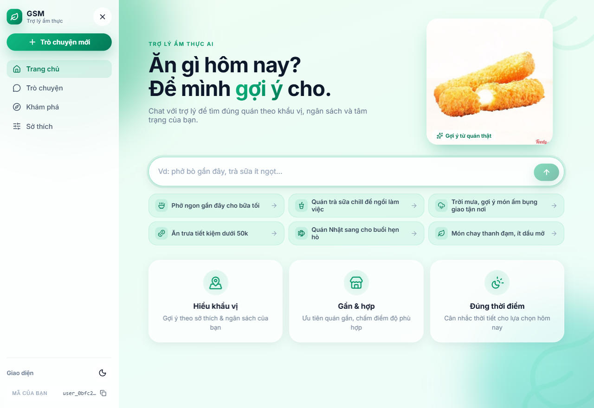
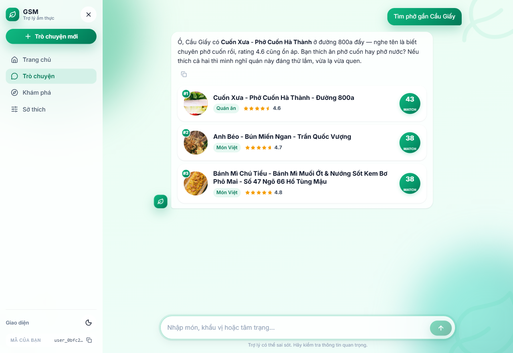
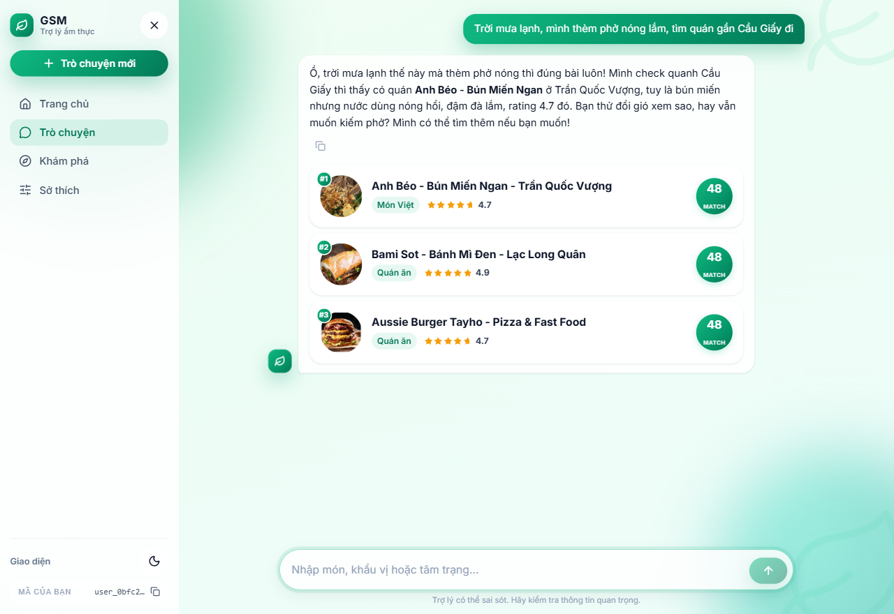
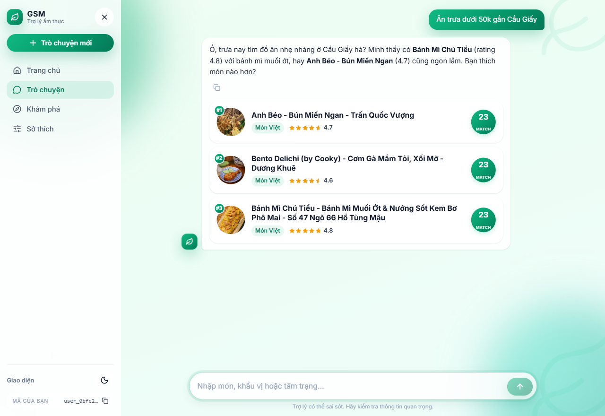
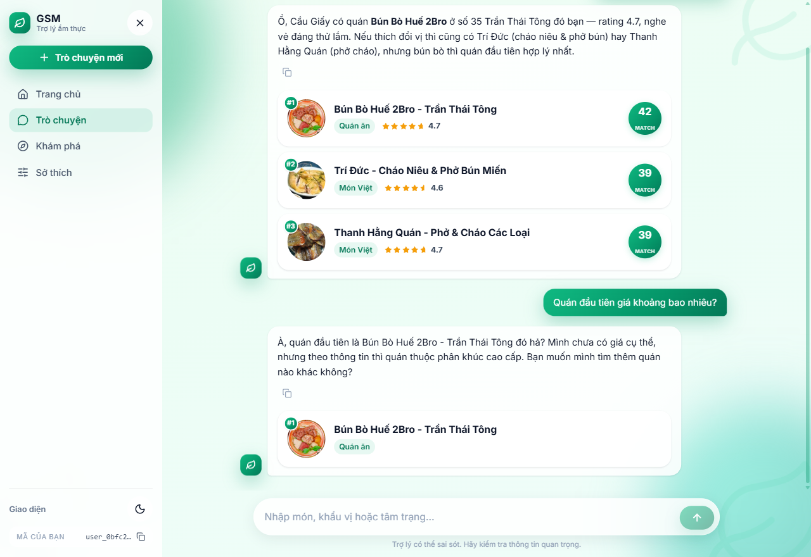

VSF Merchant Management AI là nền tảng trung tâm phục vụ hệ sinh thái VSF Merchant. Hệ thống kết hợp quản trị dữ liệu merchant (nhà hàng/quán ăn) với một trợ lý AI hội thoại phục vụ hai nhóm người dùng: Khách hàng (tìm & gợi ý quán ăn) và Chủ merchant (chẩn đoán điểm yếu, đề xuất cải thiện, phân tích đối thủ).
Dự án quy định 5 use case (UC-01..05). Trục Customer (UC-04/05) đã được xây dựng trọn vẹn end-to-end và là trọng tâm báo cáo này. Trục Merchant (UC-01/02/03) đã có design + scoring + data sẵn, agent flow ở mức target/thiết kế.
| UC | Nhóm | Mô tả | Trạng thái |
|---|---|---|---|
| UC-01 | Merchant | Diagnosis — chẩn đoán nguyên nhân ít đơn theo dimension yếu nhất + evidence (vd: waiting_time 0.15, prep 34'). | Design + data |
| UC-02 | Merchant | Recommendation — đề xuất hành động ưu tiên, gắn dimension + evidence + estimated impact. | Design + data |
| UC-03 | Merchant | Competitor — so sánh công khai từng dimension với cụm đối thủ lân cận; cấm claim KPI nội bộ. | Design + data |
| UC-04 | Customer | Restaurant search — tra cứu theo món/giá/khoảng cách (Haversine), lọc hard-constraint end-to-end. | Hoàn thành |
| UC-05 | Customer | Preference + Context — gợi ý theo sở thích đã xác nhận + thời tiết; tạo preference suggestion (chưa persist). | Hoàn thành |
Phân công: UC-01/02/03 (Merchant) — đồng đội Minh; UC-04/05 (Customer) — em (Hiếu), trọng tâm báo cáo.
Hệ thống chia lớp rõ ràng: Client → API → Agent Flow → Tools/Services → Dữ liệu, với LLM providers và dịch vụ ngoài ở biên.
session_id + location (+ tuỳ chọn weather_override) tới /chat/stream.structured_payload_json: result_merchant_ids) → phục vụ anaphora lượt sau.agent_events (task/tool, duration) theo trace_id — quan sát được toàn vẹn.haversine())agent_events observability ·
27/27 unit test xanh · eval harness ground-truth (eval_ground_truth.py) · SQLi escape + Pydantic bounds validation.
Đây là phần kỹ thuật cốt lõi và tốn công nhất. Trục Customer dùng crew tuần tự không coordinator — một quyết định thiết kế cố ý: thay vì một LLM "router" (coordinator) phân phối — vốn dễ hallucinate và chậm — hệ thống dùng các guard tất định + pipeline cố định, vừa tin cậy vừa dễ kiểm chứng.
Mỗi phiên chat (session_id) persist user + agent turn vào chat_messages; 4 lượt gần nhất
được nạp lại vào crew (TTL 24h). Agent turn lưu structured_payload_json với result_merchant_ids
theo đúng thứ tự hiển thị — để lượt sau giải quyết tham chiếu chính xác.
Câu như "quán đầu tiên", "cái đó", "hai quán kia" được giải quyết tất định bằng ordinal/referent detector đọc payload lượt trước. Kết hợp với profile grounding để trả lời đúng đối tượng — không phụ thuộc tên quán khớp chuỗi.
price_level chỉ định tính "rẻ/cao cấp", không có giá số; không có trường cay), hệ thống
ghép một absence-note cứng ngay cạnh dữ liệu: "TUYỆT ĐỐI KHÔNG bịa con số / không bịa độ cay".
Kết quả: thay vì bịa "vài chục nghìn" hoặc "bún đậu vốn không cay", Agent nói "chưa có giá cụ thể — mức giá dạng rẻ" / "không có thông tin độ cay trong dữ liệu".
\ % _) + Pydantic bounds (lat/lng/radius).Tầng data (schema, merchant profiles, scoring) do em xây — phần chung nuôi cả hai trục Customer & Merchant.
merchants · menu_items (JSONB cuisine/diet tags) · reviews · delivery_feedbacks ·
food_images · operational_metrics · merchant_profiles · user_profiles ·
chat_sessions/chat_messages. Tìm kiếm không gian dùng hàm PL/pgSQL haversine() phía server — nhanh, indexable, không cần PostGIS.
Các bảng chia 4 nhóm: thực thể merchant, profile chấm điểm, bằng chứng/vận hành, và runtime/customer. Score dùng một thang chuẩn 0..1; overall_score_internal là cột sinh tự động (bình quân 8 score), chỉ nội bộ.
| Trường | Kiểu | Ý nghĩa |
|---|---|---|
merchant_id | text PK | Mã merchant, khóa chính (theo ID nguồn) |
name · cuisine · city · city_slug | text | Tên, loại ẩm thực, thành phố — dùng để lọc |
lat · lng | double | Tọa độ (cặp cùng null/cùng có) → Haversine tìm lân cận |
opens_at · closes_at | time | Giờ mở/đóng cửa |
taste_tags · diet_tags · ingredient_tags | text[] | Tag đa giá trị: hương vị / chế độ ăn / nguyên liệu |
is_active · is_demo_target | bool | Đang hoạt động / thuộc cohort demo (5 hero) |
| Trường | Kiểu | Ý nghĩa |
|---|---|---|
tier | text | hero (evidence giàu) hoặc background |
price_level | text | Định tính: rẻ / trung bình / cao cấp — không phải giá số |
8 cột *_score | numeric 0..1 | food / image / delivery / packaging / service / waiting_time / menu_diversity / price_competitiveness |
overall_score_internal | generated | Bình quân 8 score — không bao giờ hiển thị ra ngoài (chỉ QA nội bộ) |
| Bảng | Trường chính |
|---|---|
merchant_dimension_evidence | Số liệu truy vết: value_numeric/text/boolean + reference_ids — đi kèm mỗi claim/điểm |
merchant_complaints | Khiếu nại theo category + severity (trừ điểm dimension tương ứng) |
operational_metrics | avg_prep_time_min, on_time_rate, driver_rating, packaging_ok_rate, peak_hours… |
reviews / delivery_feedbacks | Đánh giá (rating 0..10, text, sentiment) / phản hồi giao hàng (on_time, issue, driver_rating) |
menu_items / food_images | Món (price, likes, ảnh, category) / chất lượng ảnh món |
| Bảng | Trường chính |
|---|---|
user_profiles | liked/disliked_cuisines (JSONB), spice_tolerance, dietary, budget_level, distance_preference_km, current_lat/lng |
chat_messages | sender (user/agent), text, trace_id, structured_payload_json (lưu result_merchant_ids theo thứ tự → giải quyết anaphora lượt sau) |
chat_sessions | session_id, user_id, context_snapshot_json, last_trace_id |
preference_events | Audit append-only: field, operation, status (candidate→confirmed), evidence_refs — không ghi đè user_profiles |
agent_runs / agent_events | trace_id, crew_name, task/tool, duration_ms, status — quan sát toàn vẹn mỗi lần chạy |
Mỗi merchant có merchant_profiles chấm theo 8 dimension — mỗi dimension là hàm thuần trả
(score 0–1, evidence[], basis), tất định & tái lập. Bảng tóm tắt:
| Dimension | Tín hiệu chính | Complaint trừ điểm |
|---|---|---|
food_quality | rating 0.55 · sentiment 0.30 · popularity 0.15 | chất_lượng_món, món_nguội (−0.03) |
image_quality | vision (hero) / photo coverage (bg) | — |
delivery_quality | on_time 0.5 · driver 0.3 · time 0.2 | giao_hàng_trễ (−0.03) |
packaging | packaging_ok_rate | đóng_gói_kém (−0.05) |
service | rating_norm | thái_độ_phục_vụ (−0.06) |
waiting_time | avg_prep_minutes | giao_hàng_trễ (−0.03) |
menu_diversity | dish_count 0.6 · dish_type 0.4 | — |
price_level | ratio vs peer_median cùng cuisine | — (đắt phản ánh qua ratio) |
overall_score (bình quân 8 dimension) không bao giờ hiển thị ra ngoài —
một điểm yếu mạnh bị pha loãng nếu gộp (vd waiting=0.15 nhưng overall=0.66 vẫn "khá").
Thay vào đó luôn trả per-dimension + evidence. Enforce ở API response & Agent prompt.
Tổng 1.625 merchant, trong đó 18 hero (reviews/complaints/vision thật+synthetic → evidence giàu), 5 hero được gán 1 điểm yếu tất định có chủ đích để demo chẩn đoán:
| ID | Tên | Điểm yếu chủ đích | Dimension thấp |
|---|---|---|---|
| 233150 | Sushi Lounge (Vũng Tàu) | slow_prep | waiting_time 0.15 |
| 10344 | Popeyes - Tùng Thiện Vương | weak_delivery | delivery_quality 0.35 |
| 100810 | 3 Râu - Gà Rán/Pizza | weak_packaging | packaging 0.30 |
| 13909 | (Hải Phòng) | weak_food | food_quality 0.57 |
| 68814 | Dì Bảy - Bún Mắm | weak_service | service 0.58 |
Frontend React (Vite + Tailwind) với theme xanh mint thân thiện. Sidebar điều hướng (Trang chủ / Trò chuyện / Khám phá / Sở thích),
khu vực chat trung tâm và merchant card bên phải. Mỗi card: thứ hạng #1/#2/#3, ảnh món, tên, cuisine, rating sao, và match score.
Dưới đây là 5 luồng truy vấn đại diện: trang chủ, tra cứu cơ bản, bối cảnh thời tiết, lọc ngân sách, và đa lượt (giải quyết tham chiếu + trung thực giá).





Hệ thống được đo trên ground-truth 39 case (12 case coordinator-only bị bỏ qua công bằng).
Mỗi case: seed profile + replay prior turn + POST test turn tới /chat/stream, chấm bởi judge LLM (eval-fidelity-aware).
Rule "trung thực tối thượng" đã có trong prompt nhưng DeepSeek vẫn bỏ qua — bịia giá ("vài chục nghìn") và độ cay
("bún đậu vốn không cay"). Giải pháp: _profile_grounding nhận diện attribute được hỏi;
nếu profile thiếu → ghép absence-note cứng ngay cạnh data, cấm bịa. Kết quả: trả lời trung thực.
Endpoint DeepSeek (FPT) đôi khi drop/stall giữa chừng → cảnh báo explanation_stream_interrupted, khiến câu trả lời bị mất (chỉ còn lời xin lỗi).
Fix: thử stream (timeout 30s) → retry → fallback non-stream (45s) — metric & chi tiết ở §8.1 (tỉ lệ ~10-30% → ~1%).
Sau fix, cùng dạng query trả lời sạch, hội thoại tự nhiên (xem Hình 4).
Các vòng đo đầu tái dùng session_id cố định trong khi DB persist chat_messages → đọc prior turn cũ → confabulation.
Số "69%" vốn đo trên session nhiễm; 87% (arch-seam) là con số đầu tiên đáng tin. Fix: per-run stamp → session/user id duy nhất mỗi lần chạy.
prior + test. Đây là fix leverage cao nhất, giúp 3 case anaphora hoạt động đúng.
Trục Merchant (agent UC-01/02/03) là track riêng của đồng đội Minh — ngoài phạm vi báo cáo này.
| Thuật ngữ | Ý nghĩa |
|---|---|
| Crew / CrewAI | Khung điều phối nhiều agent; ở đây dùng sequential crew (tuần tự). |
| Coordinator | Agent router — đã cố ý loại bỏ thay bằng guard tất định. |
| SSE | Server-Sent Events — stream token về client (TTFT thấp). |
| Anaphora | Tham chiếu như "quán đầu tiên", "cái đó" — cần giải quyết từ ngữ cảnh lượt trước. |
| Grounding | Gắn câu trả lời vào dữ liệu thật (profile) — cốt lõi chống hallucinate. |
| Dimension | Trục chấm điểm merchant (8 trục: food/service/packaging/...). |
| Evidence | Số liệu truy vết đi kèm mỗi claim/score. |
| Haversine | Công thức tính khoảng cách trái đất — dùng cho tìm kiếm lân cận. |
docs/2026-07-21-merchant-ai-agent-complete-design.md — design AI agent đầy đủ.docs/scoring-methodology.md — công thức 8 dimension.docs/database-schema.md · docs/data-pipeline-and-dictionary.md — schema & pipeline.docs/development-roadmap.md · docs/project-changelog.md — lộ trình & lịch sử thay đổi.docs/demo-script.md · docs/sample-qa.md · docs/evaluation-plan.md — demo & eval.plans/reports/eval-260731-anaphora-clarify-final.md — báo cáo tối ưu customer agent.Báo cáo này mô tả trạng thái tính đến 01/08/2026. Trục Customer (UC-04/05) — do em thực hiện — hoàn thành end-to-end & đo 39/39 ground-truth. Trục Merchant (agent UC-01/02/03) do đồng đội Minh thực hiện; agent flow còn ở mức thiết kế.